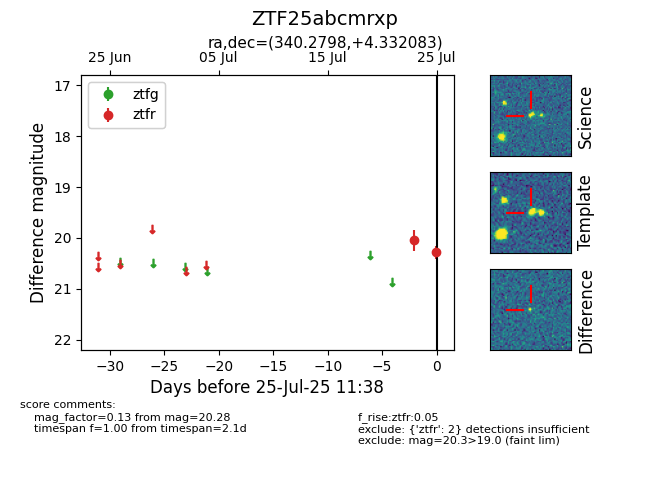

Target ZTF25abcmrxp at 2025-07-25 11:38, see:
FINK: fink-portal.org/ZTF25abcmrxp
Lasair: lasair-ztf.lsst.ac.uk/objects/ZTF25abcmrxp
ALeRCE: alerce.online/object/ZTF25abcmrxp
alt names
ZTF25abcmrxp (ztf,fink)
coordinates:
equatorial (ra, dec) = (340.2798,+4.33208)
galactic (l, b) = (72.9207,-45.50868)
photometry
last ztfr=20.28
2 ztfr detections
